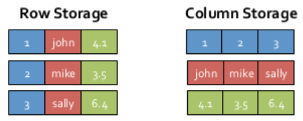
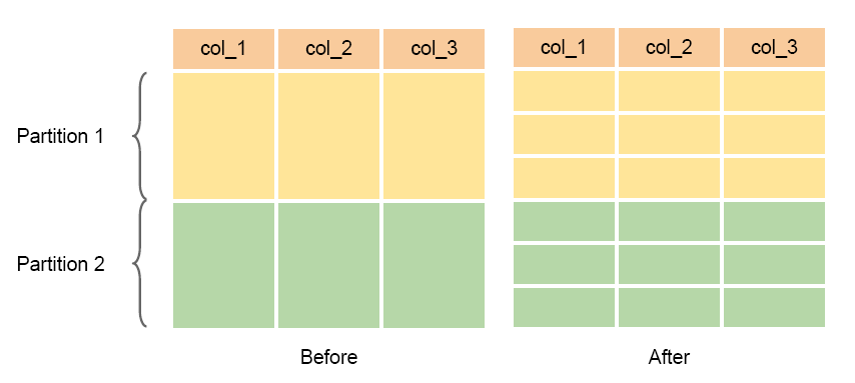
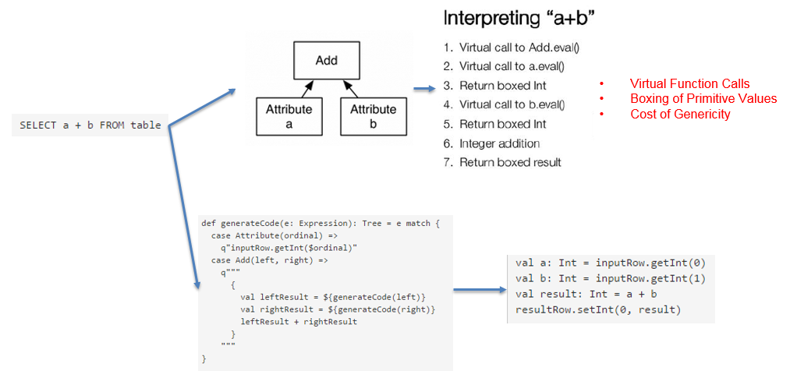
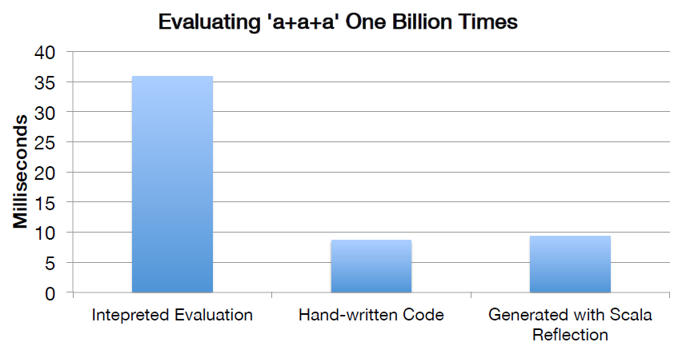
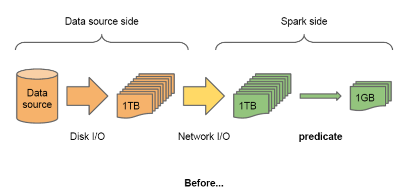
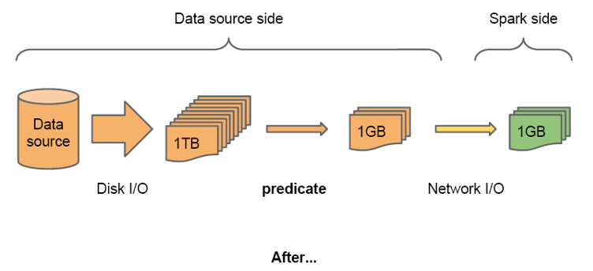
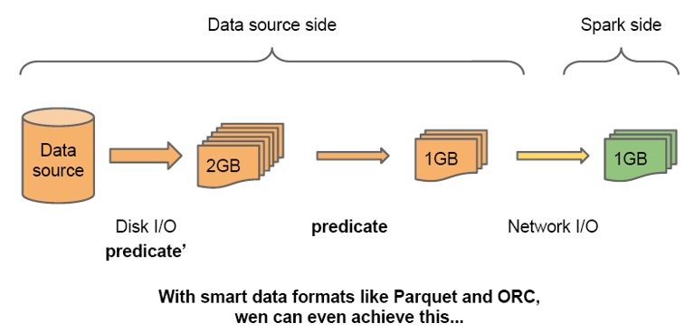
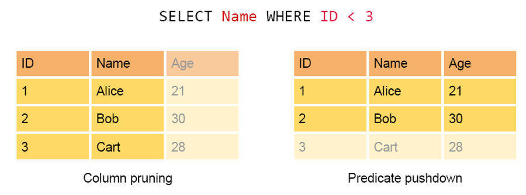
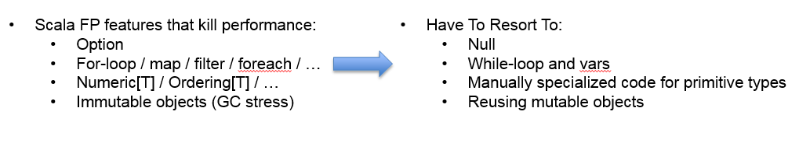

SparkSQL的性能
摆脱了Hive限制的SparkSQL的性能在Shark的基础上又有了长足的进步。

SparkSQL主要在下面几点做了性能上的优化：
1. 内存列存储(In-Memory Columnar Storage)
SparkSQL继承了Shark的内存列存储，内存列存储有诸多好处：

- GC友好：行存储的情况下每一行会产出一个java对象，而列存储每一列才会产生一个对象，在大数据的情况下，行存储会对GC产生巨大的压力。
- 压缩友好：相同数据类型的数据在内存中存放在一起，有利于压缩。
- Cache友好：分析查询中频繁使用的聚合特定列，性能会得到很大的提高，原因就是这些列的数据放在一起，更容易读入内存进行计算。
SparkSQL1.2中把每个列又分成多个batch，这样就可以避免在加载large table的时候出现OOM。

2. Code Generation
在数据库查询中有一个昂贵的操作是查询语句中的表达式，主要是由于JVM的内存模型引起的。比如如下一个查询：
SELECT a + b FROM table
在这个查询里，如果采用通用的SQL语法途径去处理，会先生成一个表达式树（有两个节点的Add树，参考后面章节），在物理处理这个表达式树的时候，将会如图所示的7个步骤：
- 调用虚函数Add.eval()，需要确认Add两边的数据类型
- 调用虚函数a.eval()，需要确认a的数据类型
- 确定a的数据类型是Int，装箱
- 调用虚函数b.eval()，需要确认b的数据类型
- 确定b的数据类型是Int，装箱
- 调用Int类型的Add
- 返回装箱后的计算结果 其中多次涉及到虚函数的调用，虚函数的调用会打断CPU的正常流水线处理，减缓执行。
Spark1.1.0在catalyst模块的expressions增加了codegen模块，如果使用动态字节码生成技术（配置spark.sql.codegen参数），sparkSQL在执行物理计划的时候，对匹配的表达式采用特定的代码，动态编译，然后运行。

如上图中的例子，开启CG后，SparkSQL最终实现效果类似如下伪代码：
val a: Int = inputRow.getInt(0)
val b: Int = inputRow.getInt(1)
val result: Int = a + b
resultRow.setInt(0, result)
CG优化的实现主要还是依靠scala2.10的reflection和Quasiquotes。CG的性能对比如下图：

3. 外部数据源Predicate pushdown
SparkSQL1.2.0可以在读取外部数据以后马上进行filter操作，以减少网络传输的数据量；对于Parquet和ORC类型的数据，SparkSQL甚至可以在读取数据的时候就进行某些filter操作，以减少磁盘IO。
  
主要有两种过滤数据的方式，分别为Column Pruning和Predicte pushdown，分别是针对列和行的过滤。

4. Scala代码优化
SparkSQL在使用Scala编写代码的时候，尽量避免低效的、容易GC的代码；尽管增加了编写代码的难度，但对于用户来说，还是使用统一的接口，没受到使用上的困难。下图是一个scala代码优化的示意图：
